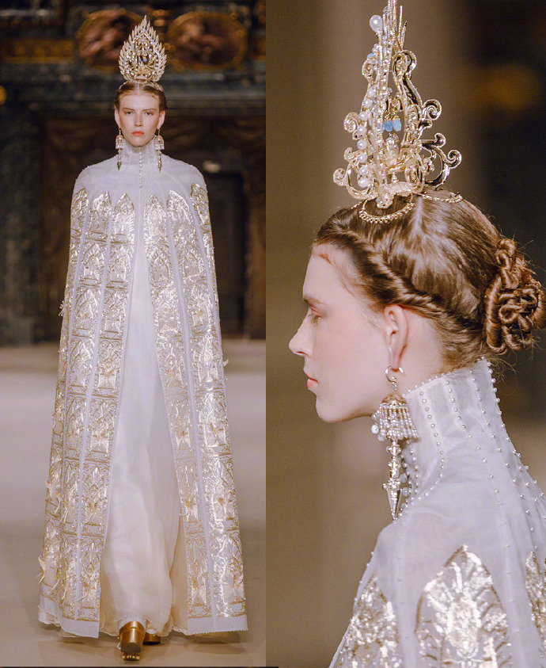
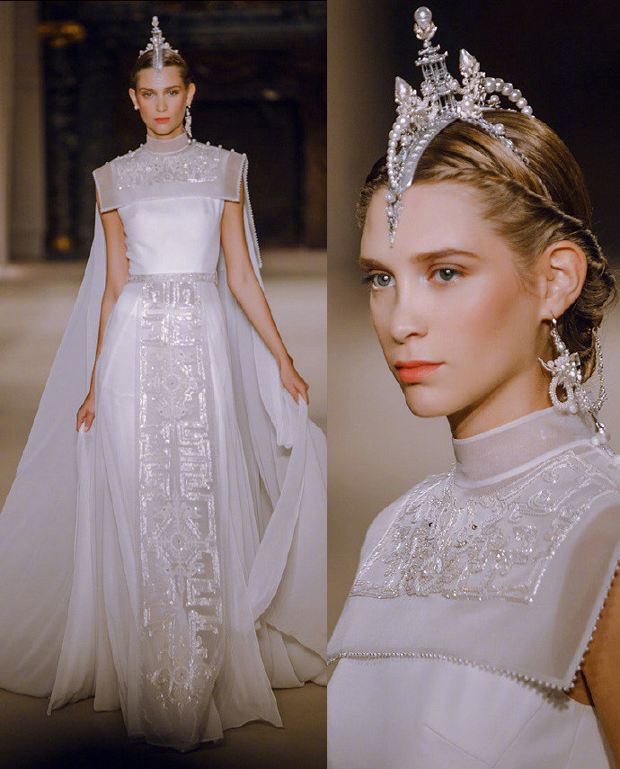
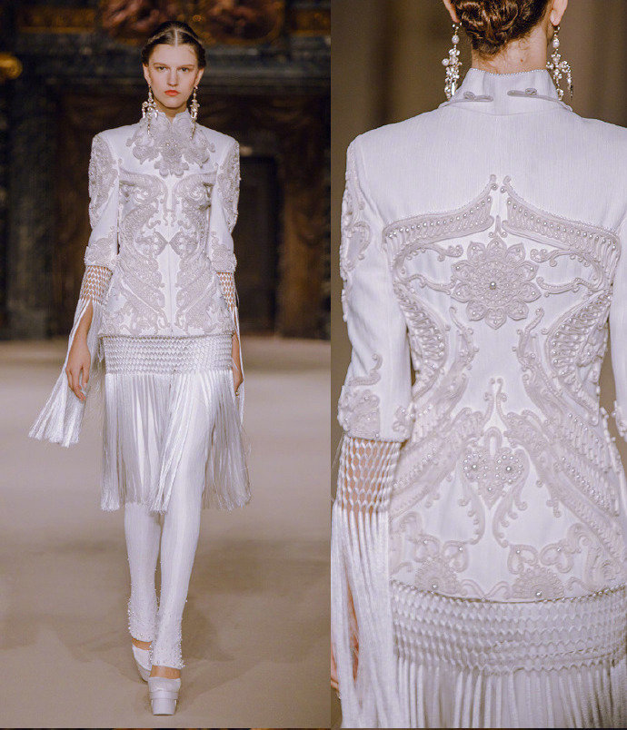
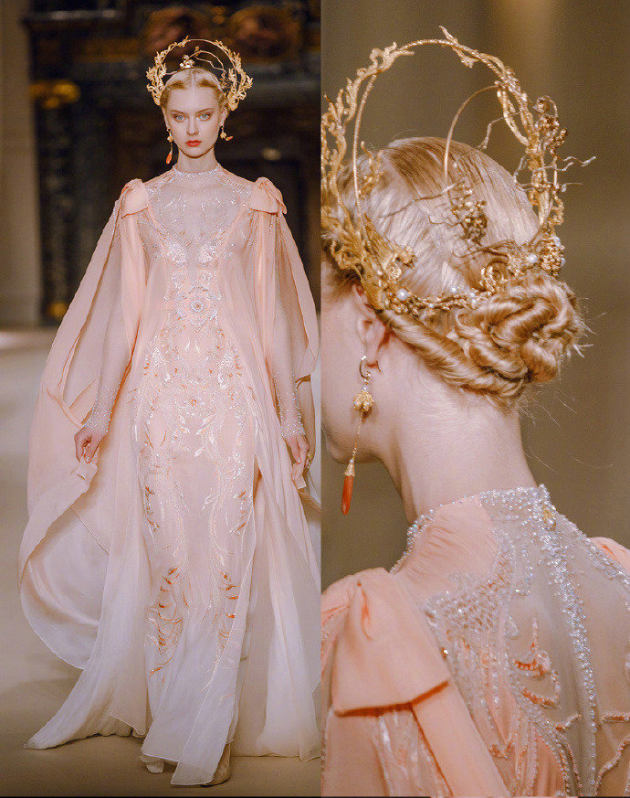

中国绣场




更多
更多
苏绣 苏绣，江苏省苏州市民间传统美术，国家级非物质文化遗产... 详细
湘绣 中国优秀的民族传统工艺之一，湘绣是以湖南长沙为中心的... 详细
蜀绣 蜀绣，四川省成都市特产，中国国家地理标志产品。蜀绣又名... 详细
铺针 铺针是汉族刺绣传统针法之一，属于广绣辅助针的一种，也称... 详细
滚针 依纹样线条前起后落，针针紧秘，线条长短一律，约一市分左右。转折处... 详细